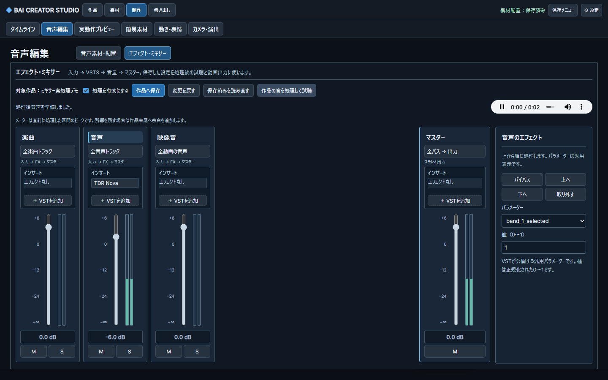
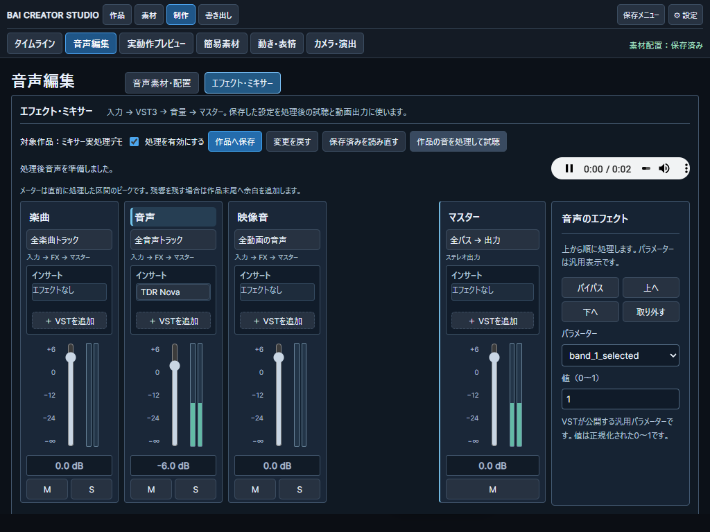
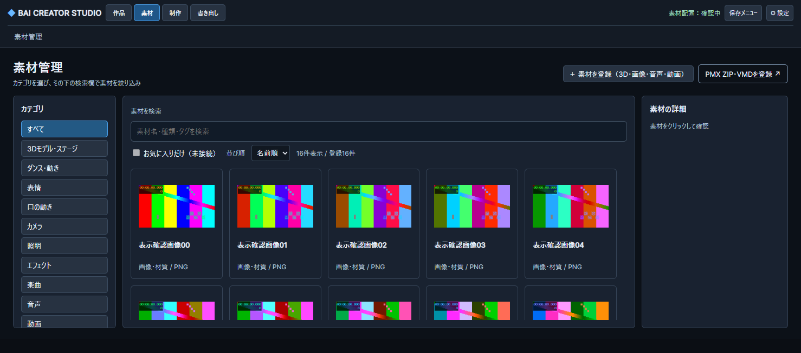
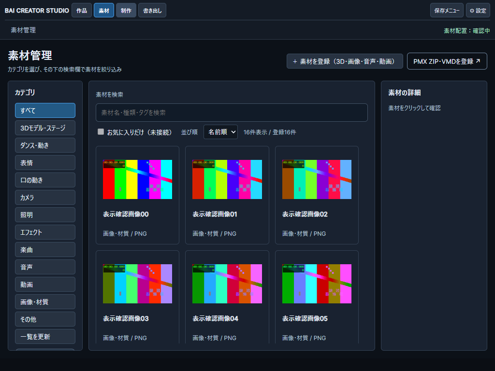

①作品別保存・処理後試聴 ②VST3インサートと汎用パラメーター ③実dB値・ピーク・M/S ④潰れない素材カードと内部スクロール。画像は合成素材による隔離Chromeの実画面です。
−6 dBのPCM比は約0.501。TDR Novaの実処理、素材管理からWAV配置、同じ処理を使う作品プレビューと完成MP4を確認。ライブ入力・全VST・固有GUIの対応は含みません。

123
123
4
4| ID | 修正 | 検証 |
|---|---|---|
| VST-UX-01 | channels/enabledだけ戻し、保存revisionを維持 | PASS：Undo後の再保存 |
| VST-UX-02 | 3プレイヤーの排他と画面切替時停止 | PASS：素材→ミキサー→タイムライン |
| VST-UX-03 | 入力無効・busyガード | PASS：遅延保存 |
| VST-UX-04 | 未保存時「保存して処理・試聴」 | PASS：ラベルと保存経路 |
| VST-UX-05 | 準備完了表示へ変更 | PASS：処理後の状態表示 |
| VST-UX-06 | 素材用transport非表示と150px以上のフェーダー | PASS：1024/1440実測 |
| VST-UX-07 | 作品ID・世代・モデル一致の照合 | PASS：A保存→B読込/A→B→A検査 |
| VST-UX-08 | 安定キーと選択チャンネルへのfallback | PASS：バイパス・最終インサート削除 |
| LIB-HEIGHT-01 | 内容高の行・196pxカード・高度設定の遅延移動 | PASS：1478×653/1024×768/1440×900 |